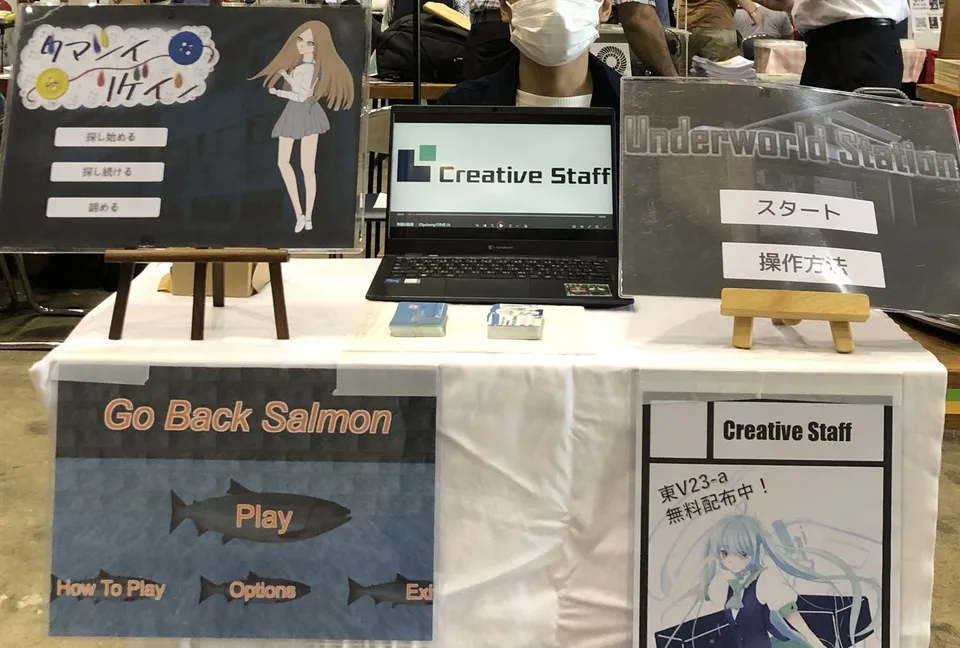
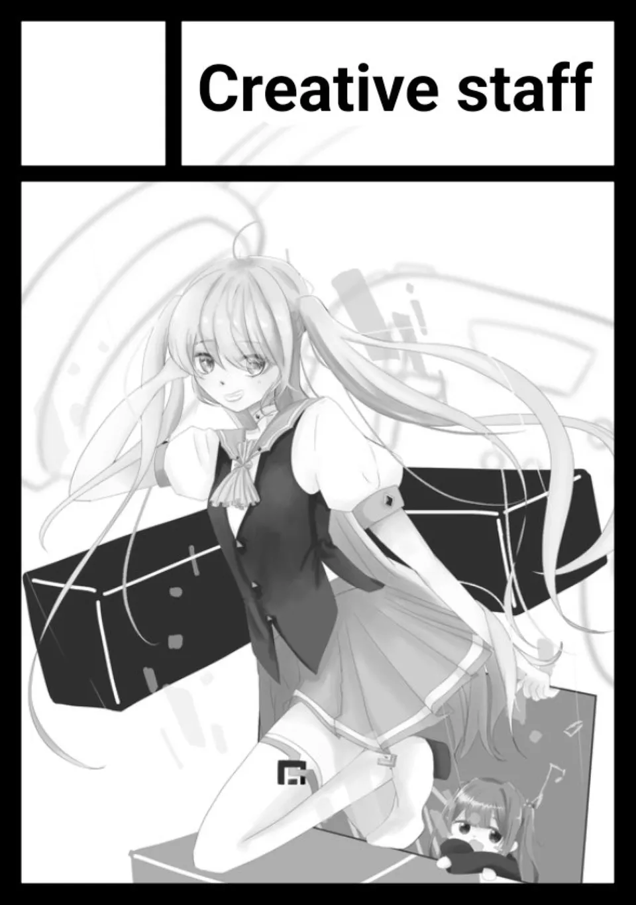
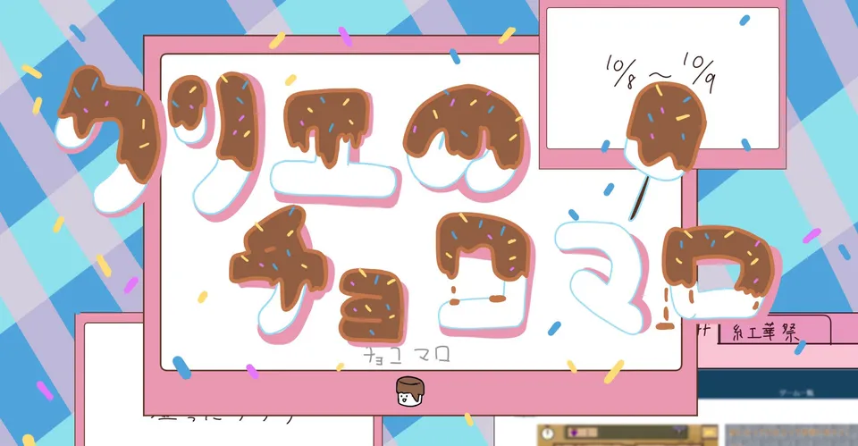

お詫び、そしてCreativeStaff 2023年の軌跡
2024年3月24日
こんにちは、こんばんは、クリエイティブスタッフです。まず最初に2023/5/22の「部員登録会後の入部について」から更新情報の更新が途切れてしまい誠に申し訳ありません。 更新が途切れた理由と致しましては、Web制作班の活動が勉学やメンバーの私生活の影響で極端に減ってしまったことがあると考えております。 今後このような事が無い様に担当の割り振りや、活動状況の随時把握など対策を致しますので、今後とも何卒クリエイティブスタッフWeb制作班をよろしくお願いします。
さて、今回は2023年以来の久々の更新情報ということで、最後の更新以降の2023年にやってきた活動を一気に振り返っていこうと思います!!(別に一個一個ページ作るの面倒くさくなったわけじゃないよ?)
C102の記録

まず部員登録会の後の大きなイベントとしてコミックマーケット102への参加がありました。
今回のコミケではなんと!! 新しいサークルカットでの参加になりました!! こちらはサークル内でサークルカット募集大会という大会を開催した結果、堂々の1位でサークルカットに選ばれた厳選されたイラストになっております。 この大会で集めたその他のイラストについても今後なにかに使用する可能性もあるのでお楽しみに。
第19回紅華祭の記録

コミケが終わり夏休みが終わると間もなく我らが東京工科大学の文化祭、通称「ボッタクリ価格で転売 良心価格で販売、そして研究棟Aの一室で自作ゲームの展示・試遊会を行いました。 展示は場所が悪く訪れる人が少なかったそう。またパピコも気温が低かったためになかなか売るのに苦労しました。
今回の紅華祭では前回の反省を踏まえてリベンジ!! 模擬店で売るものは、如何にも売れそうなチョコマシュマロでトッピングは、カラフルスプレーとアーモンドダイスの二種類を用意しました。
そして展示の方は講義棟Aの一室で行われました。しかも今回は新たに結成された制作班のゲームが3本に、個人制作のゲームが1本追加で開催しました。 それぞれ制作班の物が「Inheritance」「色づく灰世界」「止まるなローグくん!」、個人制作の物が「Stage Mixer」になります。 「Inheritance」はダークファンタジーな世界観の見下ろし型2Dアクションゲームです。 「色づく灰世界」は3Dと2Dが融合したターン制横長弾幕アクションゲームです。 「止まるなローグくん!」は見下ろし型3Dアクションゲームで今後ローグライク要素も追加する予定?な作品で、こちらはUnreal Engineで作られたゲームになっています。 「Stage Mixer」はオーディオミキサーからインスピレーションを受けたステージクリア型のパズルアクションゲームです。
これらのゲームの詳細についてはゲーム一覧から御覧ください。
そして結果ですが模擬店は前回に比べて大繁盛、ゲーム展示も多くの方々に訪れていただけました!! 模擬店に来てくれた方々、展示に訪れてくれた方々、どっちも行ったという方々、来てくださりそして、我々クリエイティブスタッフに興味を持ってくださり誠にありがとうございました。
まあ私は当日、展示で温々とGo Back Salmon(先輩が作ったバカゲー)をずっとやってただけですけどね。ちなみにベストタイムは
C103の記録?
はい
お気づきの方が居るか知らないですし「しらねぇよ」って方が大半かと思いますが（そもそもこんな記事を見てくれている人が居るか怪しいが）、
最後に
ここまで長ったらしいクソみたいな私の文章を読んでいただきありがとうございます。 途中自分語りとか入ってしまって申し訳ありません。 まあ隙を見せたあなた達が悪いってことで(そんな事は無い)
という事で今回は「CreativeStaff 2023年の軌跡」を読んでいただき本当にありがとうございます。 今後も私達クリエイティブスタッフは、皆様に楽しんでもらえる様なゲームを制作していきますので何卒よろしくお願いします。 それではまた次の更新情報でお会いしましょう。 ここまでの担当はモアイでした。
またね